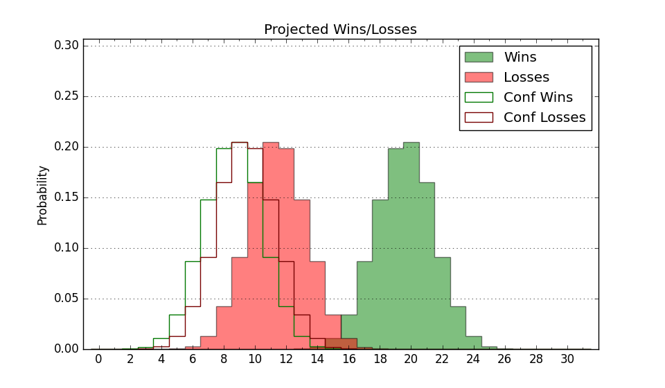

| Home | Game Probabilities | Conferences | Preseason Predictions | Odds Charts | NCAA Tournament |
| City: | Cincinnati, Ohio | |
| Conference: | Big 12 (14th)
| |
| Record: | 7-14 (Conf) 17-16 (Overall) | |
| Ratings: | Comp.: 18.8 (46th) Net: 18.8 (46th) Off: 113.4 (75th) Def: 94.6 (25th) SoR: 2.6 (70th) |
| Remaining | ||||||
|---|---|---|---|---|---|---|
| Date | Opponent | Win Prob | Pred. | |||
| Previous | Game Score | |||||
| Date | Opponent | Win Prob | Result | Off | Def | Net |
| 11/4 | Arkansas Pine Bluff (363) | 99.6% | W 109-54 | 10.3 | 6.1 | 16.4 |
| 11/8 | Morehead St. (325) | 98.3% | W 83-56 | 14.1 | -3.3 | 10.8 |
| 11/15 | Nicholls St. (158) | 92.0% | W 86-49 | 13.9 | 18.3 | 32.2 |
| 11/19 | @Northern Kentucky (232) | 86.4% | W 76-60 | 5.9 | 4.1 | 10.0 |
| 11/23 | @Georgia Tech (101) | 63.1% | W 81-58 | 14.5 | 15.6 | 30.1 |
| 11/27 | Alabama St. (287) | 97.5% | W 77-59 | -10.9 | 3.2 | -7.7 |
| 12/3 | @Villanova (50) | 36.4% | L 60-68 | -3.8 | -6.9 | -10.7 |
| 12/8 | Howard (313) | 98.1% | W 84-67 | -5.8 | -9.0 | -14.9 |
| 12/14 | Xavier (47) | 65.7% | W 68-65 | -8.8 | 10.7 | 1.8 |
| 12/20 | (N) Dayton (76) | 66.7% | W 66-59 | -7.9 | 15.1 | 7.1 |
| 12/22 | Grambling St. (318) | 98.2% | W 84-49 | 16.2 | 0.7 | 16.9 |
| 12/30 | @Kansas St. (74) | 49.8% | L 67-70 | -2.1 | 0.3 | -1.8 |
| 1/4 | Arizona (9) | 36.8% | L 67-72 | -6.2 | 5.5 | -0.7 |
| 1/7 | @Baylor (20) | 21.2% | L 48-68 | -17.7 | -0.8 | -18.5 |
| 1/11 | Kansas (19) | 47.7% | L 40-54 | -33.9 | 17.3 | -16.6 |
| 1/15 | @Colorado (82) | 53.8% | W 68-62 | -6.3 | 14.4 | 8.1 |
| 1/18 | Arizona St. (67) | 74.7% | W 67-60 | -6.2 | 7.0 | 0.8 |
| 1/21 | Texas Tech (7) | 33.0% | L 71-81 | 1.5 | -8.4 | -6.9 |
| 1/25 | @BYU (21) | 21.3% | L 52-80 | -13.5 | -16.2 | -29.8 |
| 1/28 | @Utah (63) | 44.4% | L 66-69 | -2.1 | 2.6 | 0.5 |
| 2/2 | West Virginia (49) | 66.1% | L 50-63 | -24.3 | -8.5 | -32.9 |
| 2/5 | @UCF (73) | 49.3% | W 93-83 | 13.5 | -3.8 | 9.7 |
| 2/8 | BYU (21) | 47.9% | W 84-66 | 27.3 | 7.3 | 34.6 |
| 2/11 | Utah (63) | 73.1% | W 85-75 | 19.3 | -12.8 | 6.5 |
| 2/15 | @Iowa St. (8) | 14.6% | L 70-81 | 8.8 | -6.5 | 2.3 |
| 2/19 | @West Virginia (49) | 36.4% | L 59-62 | 4.0 | -5.0 | -1.1 |
| 2/22 | TCU (80) | 79.7% | W 75-63 | 10.3 | -5.1 | 5.2 |
| 2/25 | Baylor (20) | 47.8% | W 69-67 | 8.9 | -2.7 | 6.2 |
| 3/1 | @Houston (3) | 6.9% | L 64-73 | 12.2 | 3.0 | 15.2 |
| 3/5 | Kansas St. (74) | 77.2% | L 49-54 | -29.0 | 9.3 | -19.6 |
| 3/8 | @Oklahoma St. (94) | 60.3% | L 67-78 | -12.0 | -11.2 | -23.2 |
| 3/12 | (N) Iowa St. (8) | 23.9% | L 56-76 | -9.8 | -8.8 | -18.6 |
| 4/3 | UCF (73) | 76.8% | L 80-88 | -5.1 | -19.1 | -24.2 |
| Stats & Trends | |||||
|---|---|---|---|---|---|
| Current | Day | Week | Month | Season | |
| Composite | 18.8 | -- | -- | -- | -2.3 |
| Comp Rank | 46 | -- | -- | -- | -25 |
| Net Efficiency | 18.8 | -- | -- | -- | -- |
| Net Rank | 46 | -- | -- | -- | -- |
| Off Efficiency | 113.4 | -- | -- | -- | -- |
| Off Rank | 75 | -- | -- | -- | -- |
| Def Efficiency | 94.6 | -- | -- | -- | -- |
| Def Rank | 25 | -- | -- | -- | -- |
| SoS Rank | 42 | -- | -- | -- | -- |
| Exp. Wins | 17.0 | -- | -- | -- | -2.8 |
| Exp. Conf Wins | 7.0 | -- | -- | -- | -4.0 |
| Conf Champ Prob | 0.0 | -- | -- | -- | -3.5 |

| Advanced Stats | ||
|---|---|---|
| Stat | Value | Rank |
| Off Eff FG % | 0.537 | 95 |
| Off Ast Ratio | 0.165 | 70 |
| Off ORB% | 0.342 | 45 |
| Off TO Rate | 0.117 | 13 |
| Off FT Ratio | 0.243 | 355 |
| Def Eff FG % | 0.463 | 39 |
| Def Ast Ratio | 0.124 | 49 |
| Def ORB% | 0.260 | 75 |
| Def TO Rate | 0.176 | 41 |
| Def FT Ratio | 0.233 | 8 |